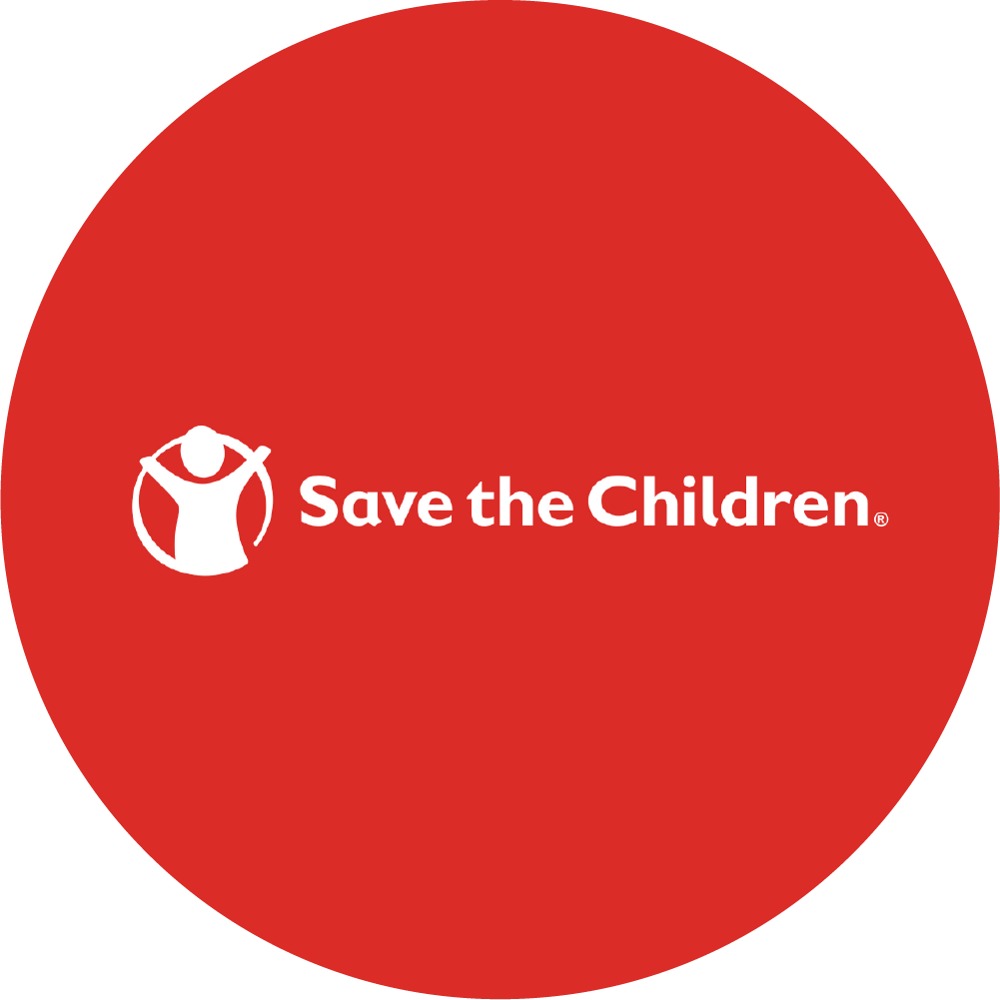

Promise for family
존슨즈는 당신과 아이가 안전하고 건강한 환경에서
살 수 있도록 지원합니다.
01
가족을 위한
존슨즈®의 약속

세이브 더 칠드런®
존슨앤드존슨®은 가난과 질병으로 고통받는 가정에 의료/원조/ 교육을 지원하는
국제 구호 프로그램을 세이브 더 칠드런® 과 협력하여 진행하고 있습니다.
02
안전한 환경에 대한
존슨즈®의 약속
아기가 안전한 환경에서 자랄 수 있도록
제품 포뮬러를 환경 친화적으로 만들 것을 약속합니다.
존슨즈®는 환경 오염을 줄이고
모든 아기가 안전하게 자랄 수 있는 세상을 만들기 위해 노력합니다.
20%
-
Check1.
보다 효율적인 공정방법으로
물 사용량을 약 20% 줄일 것입니다. -
Check2.
특허 받은 시스템을 통해 독성이 없고,
자연적으로 분해되며, 체내에 축적되지 않는 제품을 생산합니다. -
Check3.
수중 생물과 생태계에
해가 되지 않는 성분들을 우선적으로 사용합니다.
다음 세대가 살아갈 깨끗한 환경을
위해 다음과 같은 프로그램에 기꺼이 참여했습니다.
-
존슨앤드존스®의 환경보호
건강한 지구를 위해 존슨즈® 뿐만 아니라
모회사 존슨앤드존슨® 역시 다양한 환경 보호 활동을 펼치고 있습니다. -
Care To Recycle®
존슨즈®의 Care To Recycle® 캠페인은 욕실에서 사용되는 포장재 재활용의 중요성을
일깨워 줍니다. 작은 실천으로도 환경을 보호할 수 있습니다. -
환경보호 실천
존슨즈®는 천연 자원을 보호하기 위한 캠페인을 실행하고 있습니다.
모회사 존슨앤드존슨® 역시 수명을 다한 제품이 유발하는 환경 오염도를 평가하고,
마지막 순간까지 제품의 성능을 유지할 수 있도록 연구를 진행하고 있습니다.